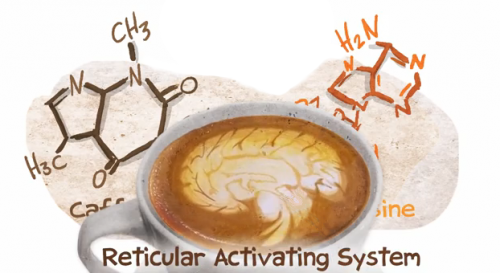

Caffein is the main component in coffee which improves human abilities. Caffein has a great effect on brain unless consumed too much. For healthy adults, 4 or 5 cup of coffee is not unhealthy but people should never drink coffee every morning regularly. Afternoon coffee's are very helpfull to body health and brain activities. Consuming coffee every morning effects your hormons which gets relaesed every morning, and causes addiction to coffee and brokes hormonal cycles.
Coffee and Caffein
Caffeine is a bitter, white crystalline xanthine alkaloid - a term used for substances produced as end products of nitrogen metabolism in some plants(Medical News Today,2015). This chemical is produced as an output of the nitrogen metobolism in plants. Roasting and brewing coffee seed is a one way to get caffein. But there is other plants produce caffein. Still most people use coffee get their caffein dose.Table of Caffein amounts
| Material | Caffein |
| Brewed Coffee(16,8 cl) | 100 mg |
| Instant Coffee(1 tsp) | 57 mg |
| Brewed decaffeinated Coffee(16,8 cl) | 3 mg |
| Instant decaffeinated Coffee(1 tsp) | 2 mg |
| Cappuccino(11,2 cl) | 100 mg |
| Espresso(5,6 cl) | 100 mg |
| Coca-Cola/Diet Coke | 46 mg |
| Red Bull(22,96 cl) | 80 mg |
| Brewed Tea(1 Cup) | 20 to 110 mg |
| Cocoa(1 Cup) | 4 mg |